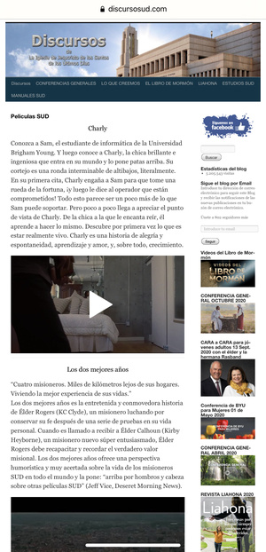
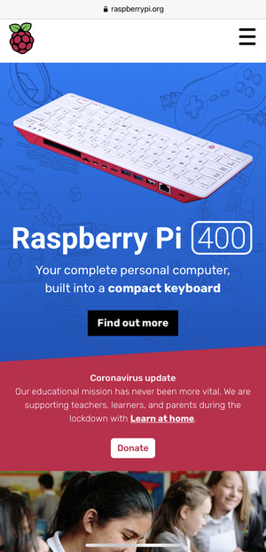

Principles of Design in Web Development
Design is not just something designers do. Design is marketing. Design
is your product and how it works.
Peep Laja Published: Apr 17, 2019 | Last updated: Sep 25, 2020
White Space
Site:
degreeportal.byupathway.org
"White space (also called “negative space”) is the portion of a
web page that remains “empty.” It’s the space between graphics,
margins, gutters, space between columns, space between lines of
type, or visuals."
The BYU Degrees home page shows the good handling of blank spaces to
distinguish the different options of the portal and give the user a
visual guide to know where to interact.
Hick's Law

Site:
discursosud.com/peliculas-sud
Hick’s Law says that with every additional choice increases the
time required to take a decision.
The more options a user has
on your website, the more difficult it is to use (if it’s used at
all). We need to eliminate choices. To make a better web design,
focus on eliminating distracting options throughout the design
process.
This page, unofficial, of speeches and films of the church, is a
clear example of how not to show options to the users of the site
since it offers so many options and so much text that it is
difficult to read and decide.
Visual Hierarchy

Site:
raspberrypi.org
Visual hierarchy is one of the most important principles behind
good web design. It’s the order in which the human eye perceives
what it sees.
Certain parts of a website are more important than others (forms,
calls to action, value proposition, etc.).
On this page designers created a very well achieved visual effect
where they visually attract the user's attention. They use the size
of the images and the size of the text to attract attention as well
as the contrast in the colors